- 550. Hol kell közlekedni a párhuzamos közlekedésre alkalmas úttesten? #703514
- Általában a külső (jobb szélső) forgalmi sávban.
- Mindig a belső forgalmi sávban.
- Mindig a külső forgalmi sávban.
- 551. Figyelembe kell-e venni a párhuzamos közlekedés szempontjából az autóbusz-forgalmi sávot? #703516
- Nem.
- Igen.
- 552. Figyelembe kell-e venni a párhuzamos közlekedés szempontjából a kerékpársávot? #703518
- Nem.
- Igen.
- 553. Szabad-e a párhuzamos közlekedésre alkalmas úttesten a forgalmi sávokat a gyorsabb továbbhaladás érdekében kis távolságon belül ismételten változtatni? #703519
- Nem.
- Igen.
- 554. Szabad-e a párhuzamos közlekedésre alkalmas úttest felezővonalát átlépni? #703520
- A balra bekanyarodás és a megfordulás esetét kivéve nem.
- Igen, kellő körültekintéssel bárhol.
- 555. Szabad-e a párhuzamos közlekedésre alkalmas úttesten két járműnek ugyanabban a forgalmi sávban egymás mellett elhaladni? #703521
- Nem, kivéve az egy nyomon haladó jármű melletti elhaladást.
- Igen.
- 556. Szabad-e a párhuzamos közlekedésre alkalmas úttesten kijelölt gyalogos-átkelőhelyen másik jármű mellett elhaladni? #703522
- Nem.
- Igen.
- 557. Szabad-e forgalmi sávot változtatni a párhuzamos közlekedésre alkalmas úttesten, ha a forgalmi sávokban összefüggő járműoszlopok alakultak ki? #703523
- Csak akkor, ha a járművezető bekanyarodásra vagy megállásra készül fel.
- Igen, korlátozás nélkül.
- Összefüggő járműoszlopok esetén sosem szabad forgalmi sávot változtatni.
- 558. Mikor szabad közlekedni a kommunális szemét szállítására szolgáló járművel az autóbusz-forgalmi sávban? #703524
- 20 és 06 óra között.
- 06 és 22 óra között.
- Sosem.
- 559. Mely járművek közlekedhetnek autópályán? #703526
- Csak a gépjárműveknek, illetőleg gépjárműből és pótkocsiból álló járműszerelvényeknek egy meghatározott köre.
- Minden motorkerékpár és minden gépkocsi.
- Minden gépjármű.
- 560. Mely gépjárművek közlekedhetnek autópályán? #703527
- Csak olyanok, amelyek sík úton legalább 60 km/h sebességgel képesek haladni.
- Csak olyanok, amelyek 130 km/h sebességgel képesek haladni.
- Csak olyanok, amelyek tachográffal vannak felszerelve.
- 561. Kell-e alkalmazni a párhuzamos közlekedés szabályait autóúton? #703528
- Az azonos irányú forgalom számára legalább két forgalmi sávval rendelkező autóúton igen.
- Igen, minden autóúton.
- A két forgalmi sávval rendelkező autóúton igen.
- 562. Szabad-e autóútról út menti ingatlanra behajtani? #703529
- Nem.
- Igen, de csak segédmotoros kerékpárral.
- Csak motorkerékpárral.
- 563. Szabad-e autópályára út menti ingatlanról ráhajtani? #703530
- Nem.
- Igen, de csak segédmotoros kerékpárral.
- Csak motorkerékpárral.
- 564. Szabad-e autópályán járművel megfordulni? #703532
- Nem.
- Igen, lassú forgalom esetén.
- Csak akkor, ha az biztonságos.
- 565. Szabad-e autópályán járművel hátramenetet végezni? #703533
- Nem.
- Igen.
- Igen, de csak azzal a céllal, hogy visszajusson az első kijárathoz.
- 566. Szabad-e az autópálya úttestén megállnia (ide nem értve a forgalmi okból szükséges megállást)? #703534
- Nem.
- Igen, fáradság esetén.
- Csak akkor, ha a leállósáv foglalt.
- 567. Szabad-e az autóút úttestén megállnia (ide nem értve a forgalmi okból szükséges megállást)? #703535
- Nem.
- Csak akkor, ha a járművezető elfáradt.
- Csak a ki- és beszállás idejére.
- 568. Szabad-e folyamatosan haladni az autópálya vagy autóút leállósávján? #703536
- Nem, ide nem értve a jogszabályban külön meghatározott feladatot ellátó járműveket.
- Igen, de csak a lassan haladó járműszerelvénnyel.
- Igen, de csak az előzést segítő nagyméretű járművel.
- 569. Mely járművek kötelesek a kapaszkodósávon közlekedni? #714874
- Egyéb jelzés hiányában csak azok a járművek, amelyek lakott területen kívül 70 km/h, lakott területen pedig 40 km/h sebességnél lassabban haladnak.
- Egyéb jelzés hiányában csak azok a járművek, amelyek lakott területen kívül 90 km/h, lakott területen pedig 50 km/h sebességnél lassabban haladnak.
- Egyéb jelzés hiányában csak azok a járművek, amelyek lakott területen kívül 60 km/h, lakott területen pedig 30 km/h sebességnél lassabban haladnak.
- 570. Kell-e alkalmazni a párhuzamos közlekedés szabályait autópályán? #714875
- Igen.
- Nem.
- 571. Szabad-e az autóbusz-forgalmi sávban kétkerekű segédmotoros kerékpárral folyamatosan közlekedni? #714876
- Igen, az autóbusz- és trolibuszforgalom zavarása nélkül.
- Nem.
- Igen, feltétel nélkül.
- 572. Szabad-e járművel az autópályán vagy autóúton a leállósávon megállni? #714893
- Nem, ide nem értve a műszaki meghibásodás miatt álló járművet, továbbá a jogszabályban külön meghatározott feladatot ellátó járműveket.
- Igen, bármilyen esetben, ha a megállás időtartama nem haladja meg az 5 percet, és a járművezető ez idő alatt a járművénél marad.
- Igen, időtartami kötöttség nélkül ez bármely jármű számára megengedett.
- 573. Szabad-e járművel az autópályán vagy autóúton a leállósávon várakozni? #714894
- Nem, ide nem értve a műszaki meghibásodás miatt várakozó járművet, továbbá a jogszabályban külön meghatározott feladatot ellátó járműveket.
- Igen, bármilyen esetben, ha a várakozás időtartama nem haladja meg a 15 percet, és a járművezető ez idő alatt a járművénél marad.
- Igen, időtartami kötöttség nélkül ez bármely jármű számára megengedett.
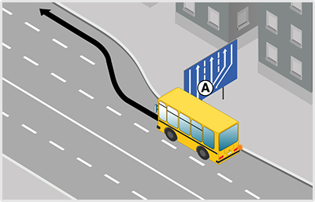
- 574. Mikor köteles a képen látható ’A’ jelű autóbusz lakott területen a kapaszkodósávon haladni? #715032
- Ha 40 km/h sebességnél lassabban halad.
- Ha 50 km/h sebességnél lassabban halad.
- Mindig, ha más nem közlekedik az úton.
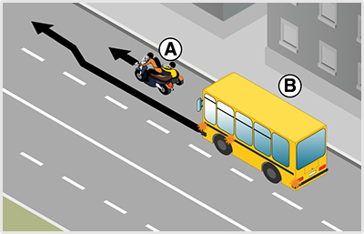
- 575. Ön a ’B’ jelű autóbuszt vezeti. Megelőzheti-e a képen látható módon az ’A’ jelű oldalkocsis motorkerékpárost? #715041
- Nem.
- Igen.
- 576. A képen látható helyen a ’B’ jelű autóbusz vezetője megelőzheti-e ugyanabban a forgalmi sávban az ’A’ jelű oldalkocsis motorkerékpárost? #715043
- Nem, mert két járműnek ugyanabban a forgalmi sávban tilos egymás mellett elhaladni.
- Igen, mert minden motorkerékpár mellett szabad elhaladni ugyanabban a forgalmi sávban.
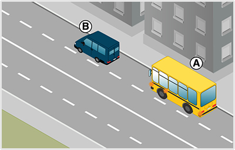
- 577. Szabad-e lakott területen az ’A’ jelű autóbusz vezetőjének megelőznie a ’B’ jelű gépkocsit? #715144
- Igen
- Igen, de csak 22 és 06 óra között.
- Nem.
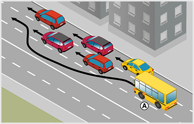
- 578. Lakott területen az ’A’ jelű 50 fős autóbusz mikor előzheti meg a képen látható személygépkocsikat? #715519
- Nem előzheti meg.
- Csak akkor, ha a két jármű megelőzése után visszatér a középső forgalmi sávba.
- Csak akkor, ha a személygépkocsik 50 km/h-nál lasabban közlekednek.

- 579. Ön az ’A’ jelű, saját vállalkozásban használt autóbuszt lakott területen kívül vezeti. Szabályosan közlekedik-e az ábrán látható módon a legbelső forgalmi sávban? #715595
- Nem.
- Igen, ha az útra engedélyezett maximális sebességgel halad.
- Igen, ha a személygépkocsi megelőzése után visszatér a jobb szélső forgalmi sávba.
- 580. Milyen körforgalmakban kell a párhuzamos közlekedés szabályait alkalmazni? #721769
- A párhuzamos közlekedésre alkalmas körforgalmakban.
- Csak a háromsávos körforgalmakban.
- Minden körforgalomban.
- 581. Közlekedhet-e a személytaxi az autóbusz-forgalmi sávban? #721774
- Igen, az autóbusz- és trolibuszforgalom zavarása nélkül.
- Nem.
- Igen, feltétel nélkül.
- 582. Szabad-e a lakott területen lévő háromsávos út középső forgalmi sávjában közlekedve elhaladni az Öntől balra lévő, legbelső forgalmi sávban lassabban haladó jármű mellett? #721777
- Igen, fokozott figyelemmel.
- Nem.
- 583. Szabad-e segédmotoros kerékpárral autópályán vagy autóúton közlekedni? #721781
- Nem.
- Igen.
- 584. Szabad-e a forgalmi sávokat - a gyorsabb előrehaladás érdekében - kis távolságon belül ismételten változtatni? #721787
- Nem.
- Igen, szabad.
- 585. Ön az ’A’ jelű autóbuszt vezeti. Lakott területen szabályosan közlekedik a képen látható kapaszkodósávon? #721804
- Igen.
- Igen, de csak akkor, ha 40 km/h sebességnél lassabban halad.
- Nem.
- 586. Haladhat-e 50 km/h sebességgel a képen látható ’A’ jelű autóbusz lakott területen a kapaszkodósávon? #721805
- Igen.
- Nem, mivel csak 40 km/h sebességnél lassabban közlekedők haladhatnak a kapaszkodósávon.
- Nem, mert azon csak tehergépkocsik közlekedhetnek.
- 587. Köteles-e az ’A’ jelű autóbusz vezetője lakott területen a ’B’ jelű gépkocsi megelőzése után a jobb szélső forgalmi sávba visszatérni? #721835
- Igen.
- Nem.
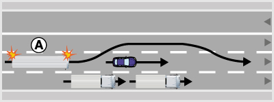
- 588. Ön az ’A’ jelű távolsági (gyorsjáratú) autóbuszt lakott területen vezeti. Szabályosan közlekedik-e az ábrán látható módon a legbelső forgalmi sávban? #721836
- Nem.
- Igen, ha a személygépkocsi megelőzése után visszatér a jobb szélső forgalmi sávba.
- Igen, még akkor is, ha a személygépkocsi megelőzése után nem tér vissza a jobb szélső forgalmi sávba.
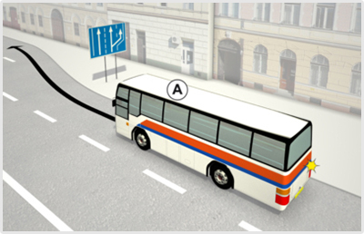
- 589. Ön az ’A’ jelű autóbuszt vezeti. Lakott területen szabályosan közlekedik a képen látható kapaszkodósávon? #722157
- Igen.
- Igen, de csak akkor, ha 40 km/h sebességnél lassabban halad.
- Nem.
- 590. Haladhat-e 50 km/h sebességgel a képen látható ’A’ jelű autóbusz lakott területen a kapaszkodósávon? #722158
- Igen.
- Nem, mivel csak 40 km/h sebességnél lassabban közlekedők haladhatnak a kapaszkodósávon.
- Nem, mert azon csak tehergépkocsik közlekedhetnek.

- 591. Ön a kormánykerékkel jelzett járművet vezeti. Lakott területen szabályosan közlekedik a képen látható kapaszkodósávon? #722163
- Igen.
- Igen, de csak akkor, ha 40 km/h sebességnél lassabban halad.
- Nem.
- 592. Ön a kormánykerékkel jelzett járművet vezeti. Haladhat-e 50 km/h sebességgel lakott területen a kapaszkodósávon? #722164
- Igen.
- Nem, mivel csak 40 km/h sebességnél lassabban közlekedők haladhatnak a kapaszkodósávon.
- Nem, mert azon csak tehergépkocsik közlekedhetnek.
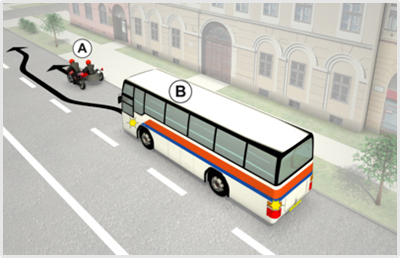
- 593. Köteles-e a ’B’ jelű autóbusz vezetője az oldalkocsis motorkerékpáros előzése közben irányjelzőjét használni? #722214
- Igen, mert forgalmi sávot kell változtatnia.
- Nem.

- 594. Ön a kormánykerékkel jelzett járművet vezetve köteles-e az oldalkocsis motorkerékpáros előzése közben irányjelzőjét használni? #722221
- Igen, mert forgalmi sávot kell változtatnia.
- Nem.
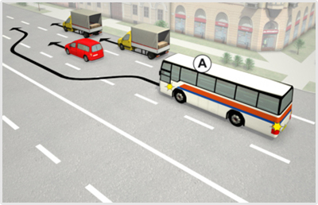
- 595. Ön az ’A’ jelű távolsági (gyorsjáratú) autóbuszt lakott területen vezeti. Szabályosan közlekedik-e az ábrán látható módon a legbelső forgalmi sávban? #722689
- Nem.
- Igen, ha a személygépkocsi megelőzése után visszatér a jobb szélső forgalmi sávba.
- Igen, még akkor is, ha a személygépkocsi megelőzése után nem tér vissza a jobb szélső forgalmi sávba.
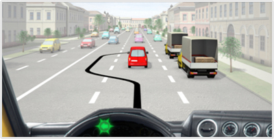
- 596. Ön a kormánykerékkel jelzett távolsági (gyorsjáratú) autóbuszt lakott területen vezeti. Szabályosan közlekedik-e az ábrán látható módon a legbelső forgalmi sávban? #722690
- Nem.
- Igen, ha a személygépkocsi megelőzése után visszatér a jobb szélső forgalmi sávba.
- Igen, még akkor is, ha a személygépkocsi megelőzése után nem tér vissza a jobb szélső forgalmi sávba.
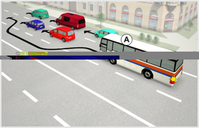
- 597. Lakott területen a képen látható ’A’ jelű 50 fős autóbuszt vezeti. Válassza ki a helyes állítást! #723039
- A legbelső forgalmi sávban nem előzhet meg másik járművet.
- Ha az előzés feltételei adottak, akkor végrehajtható az ’A’ jelű 50 fős autóbusszal a képen látható előzés.
- A személygépkocsik megelőzése után tovább közlekedhet a belső forgalmi sávban.
- 598. Lakott területen szabályosan előz a képen látható ’A’ jelű 50 fős autóbusz? #723040
- Nem.
- Igen, de csak akkor, ha legfeljebb két járművet előz meg.
- Igen.
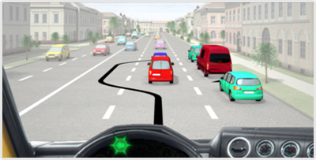
- 599. Ön lakott területen a kormánykerékkel jelzett 50 fős autóbuszt vezeti. Válassza ki a helyes állítást! #723045
- A legbelső forgalmi sávban nem előzhet meg másik járművet.
- Ha az előzés feltételei adottak, akkor végrehajtható az ’A’ jelű 50 fős autóbusszal a képen látható előzés.
- A személygépkocsik megelőzése után tovább közlekedhet a belső forgalmi sávban.
- 600. Ön lakott területen a kormánykerékkel jelzett 50 fős autóbuszt vezeti. Szabályos előzést hajt végre? #723046
- Nem.
- Igen, de csak akkor, ha legfeljebb két járművet előz meg.
- Igen.
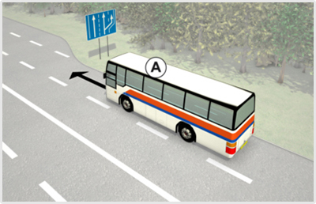
- 601. Az ’A’ jelű autóbusz lakott területen kívül 70 km/h sebességgel halad. Szabályos helyen közlekedik? #723372
- Igen.
- Nem, mert a kapaszkodósávon köteles haladni.
- 602. Az ’A’ jelű autóbusz lakott területen kívül a ködös idő miatt csak 60 km/h sebességgel halad. Szabályos helyen közlekedik? #723373
- Nem, mert ezzel a sebességgel a kapaszkodósávon kell haladnia.
- Igen, mert rossz látási viszonyok esetén ez a legbiztonságosabb forgalmi sáv.
- Igen, mindaddig, amíg az úton nem érkezik másik jármű.

- 603. Ön a kormánykerékkel jelzett járművet vezeti. Melyik jármű haladhat tovább elsőként az ábrán látható helyen? #723487
- Az ’A’ jelű személygépkocsi.
- Az Ön által vezetett jármű.
- Kölcsönös megegyezés alapján haladhatnak tovább.
- 604. Ön a kormánykerékkel jelzett járművet vezeti. Az ábrán látható helyen... #723488
- elsőbbséget kell adnia az ’A’ jelű személygépkocsi részére.
- elsőbbsége van az ’A’ jelű személygépkocsival szemben.
- meg kell egyezniük a továbbhaladási sorrendben.
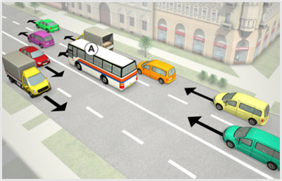
- 605. Ön az ’A’ jelű távolsági (gyorsjáratú) autóbuszt lakott területen vezeti. Szabályosan közlekedik-e a belső forgalmi sávban? #723639
- Igen.
- Nem, mert vissza kell térnie a jobb szélső forgalmi sávba.
- Igen, de csak akkor, ha a következő, közeli útkereszteződésben balra kíván kanyarodni.
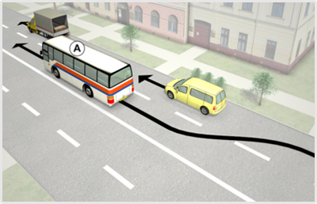
- 606. Ön az ’A’ jelű távolsági (gyorsjáratú) autóbuszt lakott területen vezeti. Szabályosan közlekedik-e a belső forgalmi sávban? #723640
- Igen.
- Nem, mert a személygépkocsi megelőzése után vissza kell térnie a jobb szélső forgalmi sávba.
- Csak akkor, ha a következő, közeli útkereszteződésben balra kíván kanyarodni.

- 607. Mit jelent a képen látható közúti jelzőtábla? #723673
- ’Kapaszkodósáv’.
- ’A besorolás rendje a következő útkereszteződésben’.
- ’Lassítósáv’.

- 608. Az ’A’ jelű jármű lakott területen kívüli autópályán 70 km/h sebességgel halad. Szabályos helyen közlekedik? #723685
- Igen.
- Nem, mert a kapaszkodósávon köteles haladni.
- Nem, mert a megengedettnél lassabban történő haladása miatt ezen a sávon veszélyhelyzetet teremt.
- 609. Az ’A’ jelű jármű lakott területen kívül a ködös idő miatt csak 60 km/h sebességgel halad. Szabályos helyen közlekedik? #723686
- Nem, mert ezzel a sebességgel csak a kapaszkodósávon szabad haladnia.
- Igen, mert rossz látási viszonyok esetén nem köteles senki a kapaszkodósávon haladni.
- Igen, mindaddig, amíg az úton nem érkezik másik jármű.

- 610. Mit jelent a képen látható közúti jelzőtábla? #723690
- ’Kapaszkodósáv’.
- ’A besorolás rendje a következő útkereszteződésben’.
- ’Lassítósáv’.

- 611. Mit jelent a képen látható közúti jelzőtábla. #723696
- ’Kapaszkodósáv’.
- ’A besorolás rendje a következő útkereszteződésben’.
- ’Lassítósáv’.

- 612. Mikor köteles az ’A’ jelű jármű lakott területen kívül a kapaszkodósávon közlekedni? #723707
- Ha 60 km/h sebességnél lassabban halad.
- Ha 80 km/h sebességgel halad.
- Ha 90 km/h sebességgel halad.
- 613. Az ’A’ jelű jármű lakott területen kívül 60 km/h sebességgel halad. Szabályos helyen közlekedik? #723708
- Igen.
- Nem, mert a kapaszkodósávon köteles haladni.
- Nem, mert a megengedettnél lassabban történő haladása miatt ezen a sávon veszélyhelyzetet teremt.

- 614. A képen látható helyen mindkét jármű csak irányváltoztatással tudja az útját folytatni. Melyik jármű haladhat tovább elsőként? #724046
- A jobbról érkező ’A’ jelű autóbusz.
- A balról érkező ’B’ jelű személygépkocsi.
- Kölcsönös megegyezés alapján haladhatnak tovább.
- 615. A képen látható helyen melyik jármű haladhat tovább elsőként? #724047
- Az ’A’ jelű autóbusz.
- A ’B’ jelű személygépkocsi.
- Kölcsönös megegyezés alapján haladhatnak tovább.
- 616. Ön az ’A’ jelű autóbuszt vezeti. A képen látható helyen... #724048
- elsőbbsége van a ’B’ jelű személygépkocsival szemben.
- elsőbbséget kell adnia a ’B’ jelű személygépkocsi részére.
- meg kell egyezniük a továbbhaladási sorrendben.

- 617. A képen látható helyen melyik jármű haladhat tovább elsőként? #724067
- Az ’A’ jelű személygépkocsi.
- A ’B’ jelű autóbusz.
- Kölcsönös megegyezés alapján haladhatnak tovább.
- 618. Ön a ’B’ jelű autóbuszt vezeti. A képen látható helyen... #724068
- elsőbbséget kell adnia az ’A’ jelű személygépkocsi részére.
- elsőbbsége van az ’A’ jelű személygépkocsival szemben
- meg kell egyezniük a továbbhaladási sorrendben.
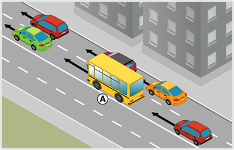
- 619. Szabályosan közlekedik a kialakult párhuzamos közlekedésben a képen látható ’A’ jelű távolsági autóbusz? #724082
- Igen, ha a járművek megelőzése után visszatér a külső forgalmi sávba.
- Nem, távolsági autóbusszal nem tartózkodhat a belső forgalmi sávban.
- Igen, de kizárólag 22 és 06 óra között.
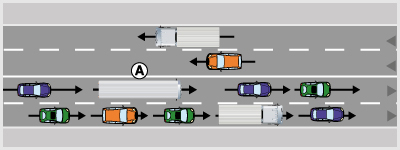
- 620. Ön az ’A’ jelű, saját vállalkozásban használt autóbuszt lakott területen kívül vezeti. Szabályosan közlekedik-e a belső forgalmi sávban? #724107
- Csak akkor, ha a következő közeli útkereszteződésben balra kíván kanyarodni.
- Igen, autóbusszal szabad a belső forgalmi sávban haladni.
- Igen, mindaddig, amíg folyamatosan előz.
- 621. Ön az ’A’ jelű távolsági (gyorsjáratú) autóbuszt lakott területen vezeti. Szabályosan közlekedik-e a belső forgalmi sávban? #724108
- Igen.
- Nem, mert vissza kell térnie a jobb szélső forgalmi sávba.
- Csak akkor, ha a következő, közeli útkereszteződésben balra kíván kanyarodni.
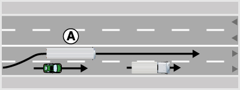
- 622. Ön az ’A’ jelű távolsági (gyorsjáratú) autóbuszt lakott területen vezeti. Szabályosan közlekedik-e a belső forgalmi sávban? #724109
- Igen.
- Nem, mert a személygépkocsi megelőzése után vissza kell térnie a jobb szélső forgalmi sávba.
- Csak akkor, ha a következő, közeli útkereszteződésben balra kíván kanyarodni.
- 623. Ön az ’A’ jelű, saját vállalkozásban használt autóbuszt lakott területen kívül vezeti. Szabályosan közlekedik-e a belső forgalmi sávban? #724110
- Nem, mert ezzel az autóbusszal nem előzhet folyamatosan.
- Igen, autóbusszal használhatja a belső forgalmi sávot, ha az útra engedélyezett maximális sebességgel halad.
- Igen, mindaddig, amíg folyamatosan előz.